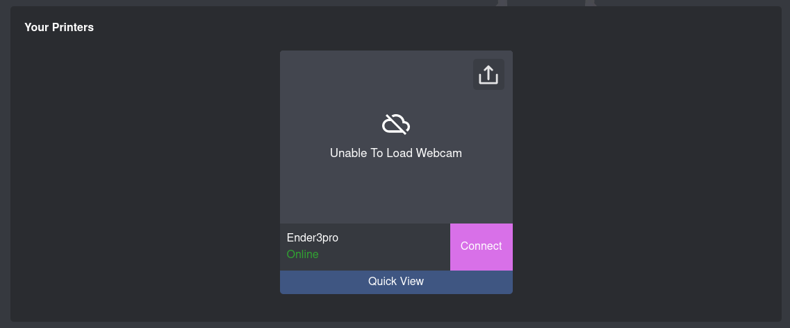

Accessibilité à Octoprint
Afin d'améliorer considérablement l'expérience utilisateur avec OctoPrint, une fonctionnalité essentielle a été intégrée : la possibilité de se connecter à la plateforme sans les contraintes habituelles du réseau Wifi, telles que les configurations initiales fastidieuses.
OctoEverywhere
OctoEverywhere représente la solution innovante adoptée pour surmonter cette barrière. Cette fonctionnalité révolutionnaire permet aux utilisateurs d'accéder à leur instance OctoPrint de manière transparente et sécurisée, quel que soit leur emplacement géographique ou leur réseau local. En utilisant OctoEverywhere, les utilisateurs peuvent se connecter à leur imprimante 3D et gérer leurs travaux d'impression à distance, sans avoir à configurer manuellement les paramètres réseau ou à se soucier des limitations de connexion.
L'infrastructure sous-jacente d'OctoEverywhere utilise une technologie de pointe pour créer un tunnel sécurisé entre l'utilisateur et son instance OctoPrint. Cela garantit une communication fiable et sécurisée, préservant ainsi la confidentialité des données et offrant une expérience utilisateur fluide et sans tracas.
En permettant un accès à distance à OctoPrint via OctoEverywhere, cette fonctionnalité élargit considérablement les possibilités d'utilisation de l'impression 3D. Les utilisateurs peuvent surveiller et contrôler leurs impressions à partir de n'importe quel appareil connecté à Internet, que ce soit un ordinateur de bureau, un smartphone ou une tablette, offrant ainsi une flexibilité inégalée et une plus grande commodité dans la gestion des projets d'impression.
Utilisation d'OctoEverywhere
Pour utiliser OctoEverywhere, l'utilisateur doit d'abord l'installer comme un plugin dans OctoPrint, puis suivre les instructions pour se connecter à la plateforme OctoEverywhere.
Une fois la connexion établie, voici l'interface présentée :

Ensuite, lorsque l'utilisateur clique sur Connect, il est redirigé vers une page présentant exactement les mêmes caractéristiques que celles d'OctoPrint. Cela signifie que l'utilisateur peut accéder à toutes les fonctionnalités familières d'OctoPrint, y compris le contrôle de l'imprimante, la surveillance des températures, l'affichage du visualiseur GCode et bien plus encore, mais avec la facilité d'accès offerte par OctoEverywhere.